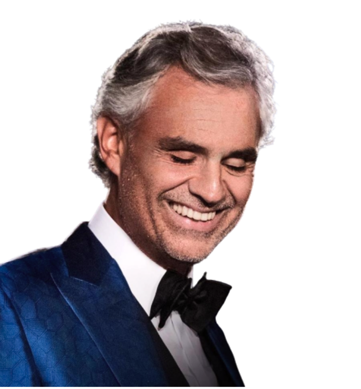

Andrea Bocelli
Andrea Bocelli é um tenor Italiano nascido em 22 de Setembro de 1958 em Lajatico, Toscana na Itália.
Desde criança, tinha Glaucoma que é uma doença ocular, que afeta o nervo ótico. Aos 12 anos de idade na
escola, foi atingido por uma bola na cabeça e desde então, não mais vê.
A pedido do pai, estudou Advocacia na Universidade de Pisa. No entanto, continuou sua carreira de músico se
apresentando em bares até que ganhou o concurso de canto de Sanremo em 1994, em que lhe proporcionou
exposição e oportunidades como músico.